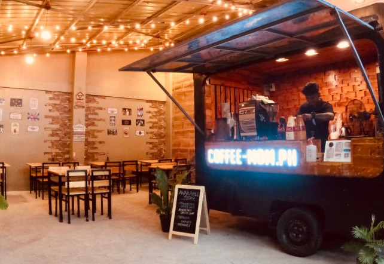
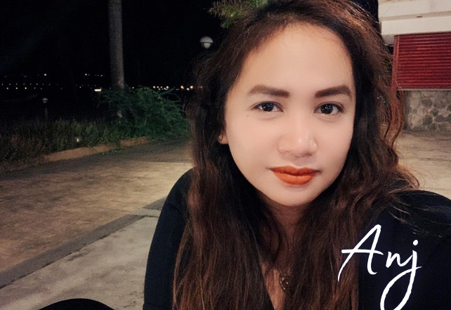

.png)
Welcome to The Coffee Mom, where our passion for coffee meets a dedication to creating a remarkable experience for each guest.
At our core, we are more than just a coffee shop. We are a community of coffee enthusiasts and certified coffee baristas united by a shared love for the art and science of coffee-making
The Coffee Mom was not only created for the sake of having another coffee shop in a city full of such; it was built with a significant goal to introduce the absolute goodness of coffee extracted from fresh Arabica coffee beans harvested from our local coffee farms in the Philippines - specifically those farms in the Cordillera highlands.
With a vision to provide a haven for both coffee lovers and car enthusiasts, our story begins with a couple - Anj and JN Dela Cruz.
Landmarks: Along the street behind Contis, Wendy's, and Hotel Sogo Tarlac. The Coffee Mom is located within the premises of Nanoworx Car Care Services (carwash).


Anj, a home-based SEO Manager for over 13 years and a coffee enthusiast for over 20, is "The Coffee Mom."
One may think that being a nocturnal work-at-home mom drove her to become a coffee lover. The truth is - Anj's love for coffee started even before Starbucks made its way to the Philippines in 1997.
As a Grade School student who was always afraid of not having a perfect score in her recitations, quizzes, and exams, coffee became Anj's best friend every school night. All gratitude should be directed towards their helpers who helped her sneak coffee under her parents' noses.
Over the years, coffee has always been Anj's go-to drink. She would always choose coffee over soft drinks, juices, shakes, milk teas, or even water sometimes. She never liked sodas.
Anj's taste for coffee became more and more meticulous as she got older. Sugar-loaded desserts disguised as Iced Coffee drinks from overrated coffee establishments never excite her.
Her meticulous taste for the quality of coffee she drinks also pushed her to create The Coffee Mom's coffee shop and website - to serve coffee the right way and hope to educate everyone about it.
Anj spends most of her time at home - working remotely as a full-time SEO Specialist and Content Writer, baking The Coffee Mom's premium palm-sized cookies and signature cheesecakes, creating marketing materials for both The Coffee Mom and Nanoworx Car Care, or spending time with their three children.